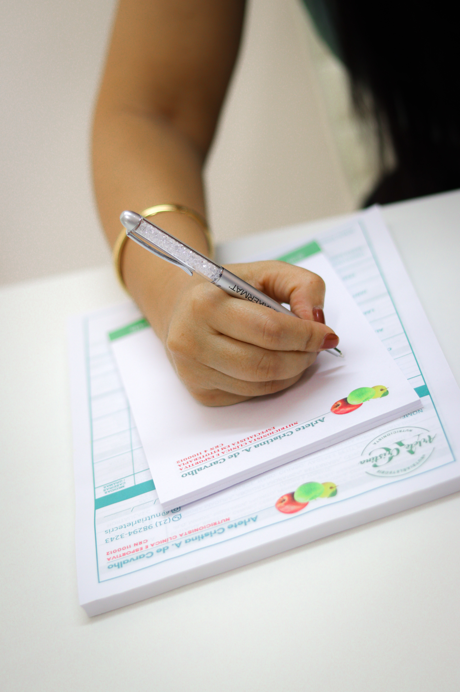

Minhas Especialidades
Avaliações e diagnóstico

Realizo uma avaliação de bioimpedância, histórico pessoal e familiar, hábitos alimentares, estilo de vida, e rastreamento de problemas metabólicos e alergias, para entender cada detalhe que impacta sua saúde e criar um plano preciso e eficaz.
Plano nutricional exclusivo

Cada plano é criado com precisão para atender suas metas, seja para emagrecimento, ganho de massa muscular, tratamento de condições específicas ou melhoria na qualidade de vida. Meu objetivo é que o plano funcione e se encaixe de forma prática na sua rotina.
Acompanhamento consistente

Ofereço consultas quinzenais ou mensais para ajustar cada etapa do plano de acordo com suas necessidades e resultados. Com um acompanhamento próximo, você se sentirá apoiado em cada fase, garantindo mudanças sustentáveis e eficazes.